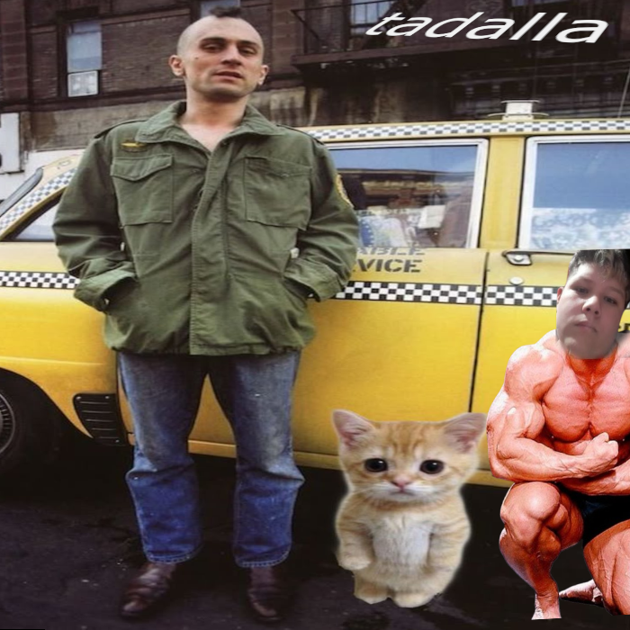

“A solidão é uma constante em minha vida. Nos bares, nos carros, nas ruas, nas lojas, em toda parte. Não há saída. Sou um homem só.”

“Ouça, cambada de sacanas. Comigo vocês não podem. Desafio os imundos, as porcas, os cachorros, os canalhas. Sou um revoltado.”
Sou apenas um tolo :)